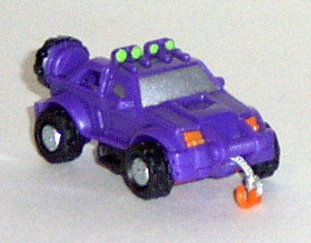
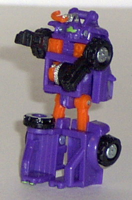
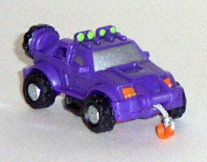
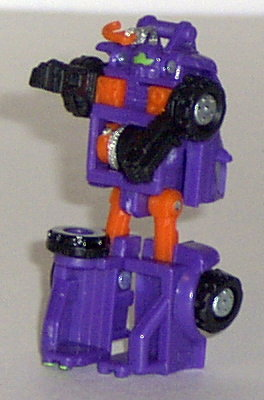
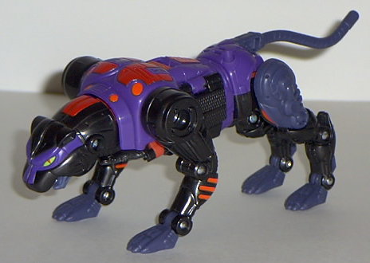
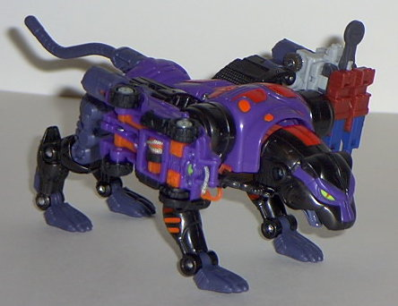
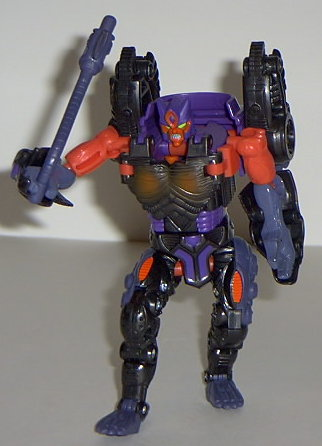

Cliffjumper
Cliffjumper
 
Allegiance : Minicon
Size : Mini-Con
Difficulty of Transformation : Very Easy
Color Scheme : Purple, black, orange, and some metallic silver and lime green
Rating : 4.3
Cliffjumper


Allegiance
: Minicon
Size
: Mini-Con
Difficulty of Transformation
: Very
Easy
Color Scheme
: Purple, black, orange,
and some metallic silver and lime green
Rating
: 4.3
(NOTE: Because this is a repaint, this is not a full-blown review. This mainly covers any changes made to the mold and the color scheme, and merely compares it to Ransack. For a review on the mold itself, read the review of Ransack here .)
Since I really like the
combo of purple and orange on Transformers, it should come as no surprise
to you that I like Cliffjumper's color scheme. It has just the right amount
of purple and orange- with some black in there as well- to go together
perfectly. The orange could be a couple of shades darker, but it's really
no biggie. I also like the green headlights and robot optics. HOWEVER...
it's a really, really funky color scheme for a jeep, of all things. I mean,
have you EVER seen a purple, orange, and black jeep? And, Cliffjumper doesn't
have any really nifty new paint apps on him like Universe Silverbolt did,
so as an overall rating, I'm gonna have to dock a few points, which gives
him a slightly lower rating than Ransack overall.
No mold changes were
made to Cliffjumper.
Cliffjumper's color
scheme is good, but not really FITTING for a jeep. I'd recommend Ransack
over him.
 Cheetor
Cheetor



Allegiance
: Autobot
Size
: Super-Con
Difficulty of Transformation
: Medium
Color Scheme
: Black, purple, dark
flat gray-blue, orange, and some bright red, pale silver, and lime green
Powerlinx ports
: 2 (0 gimmicked)
Rating
: 9.6
(NOTE: Because this is a repaint, this is not a full-blown review. This mainly covers any changes made to the mold and the color scheme, and merely compares it to Cheetor Transmetal. For a review on the mold itself, read the review of Cheetor Transmetal here .)
Man, and I thought Transmetal
Cheetor couldn't GET any prettier... Although I do admit that I miss the
chrome gold that the previous versions of this mold had, it's offset by
the fact that you don't have to worry about any chrome chipping on this
one. Not to mention Armada Cheetor's color scheme is SWEET! He's primarily
black and purple, with some red and orange accents. Everything just fits
together completely perfectly! No overabundance of any one color- the orange
and red are used for accents on this guy, as they should be, while the
other darker colors take a foreground. The only thing I'm not completely
fond of is that blue-gray- maybe just a deeper purple would have been a
better choice. Plus, Cheetor also has more paint detailing this time around-
on his back (in a cool asymmetrical paint pattern, to boot), and some nice
red cat pupils in his cat mode. Simply awesome. As for mold changes, Cheetor's
two Powerlinx ports are on the front ends of his flip-out jets. Although
this looks REALLY cool if you link two
Skyblasts
to him (unfortunately, I don't have two), any other Minicon will look extremely
odd on these ports. In fact, even Ransack/Cliffjumper- who also has a port
on his back end- doesn't look very good on these two ports, since it makes
Cheetor look like he has jeep thrusters. Err... what? Also, the Powerlinx
ports don't tend to stay in one place when you try to push a Minicon onto
them- they usually collapse back in, so you have to cram a fingernail in
there to hold the ports out. A bit of an oversight, there. Oh, and unlike
the other Armada Beasts, Cheetor doesn't have any "energy lines" running
off his ports. And he also doesn't have any allegiance symbols to speak
of. Boooo.
Cheetor's new color
scheme is definitely the best of all three versions of this mold, although
the placements of the Minicon ports is a bit in question. Still, highly
recommended, especially if you don't have the previous versions of this
mold.
No Stats
Review by Beastbot